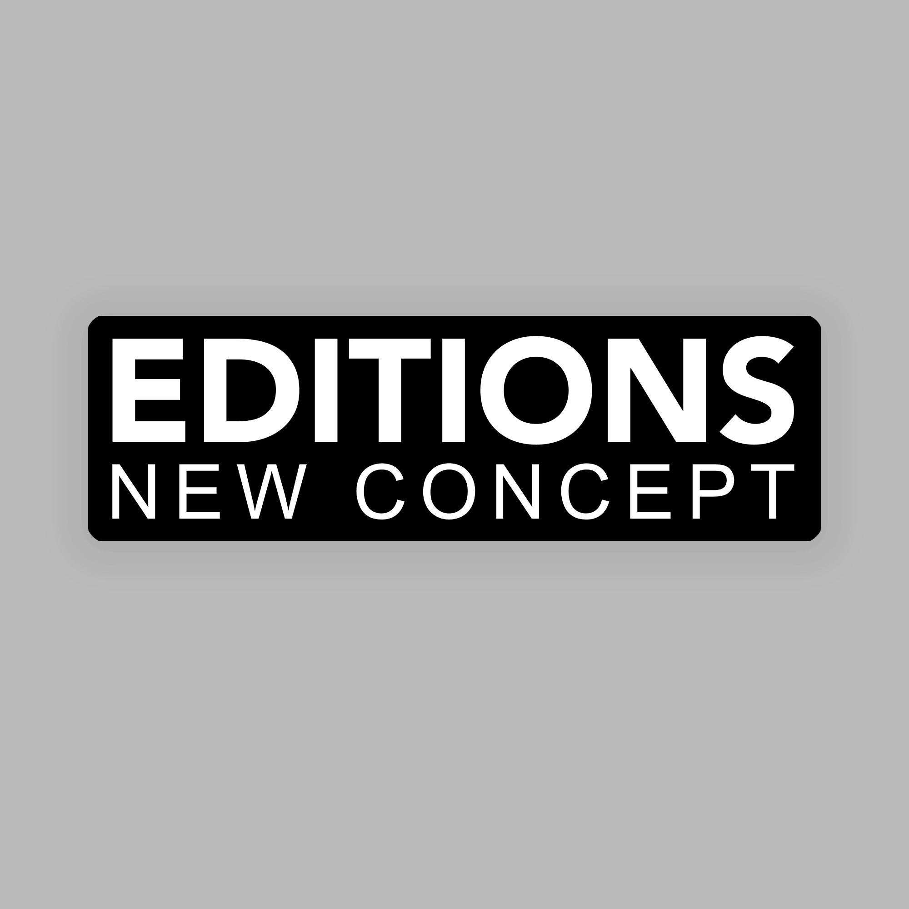
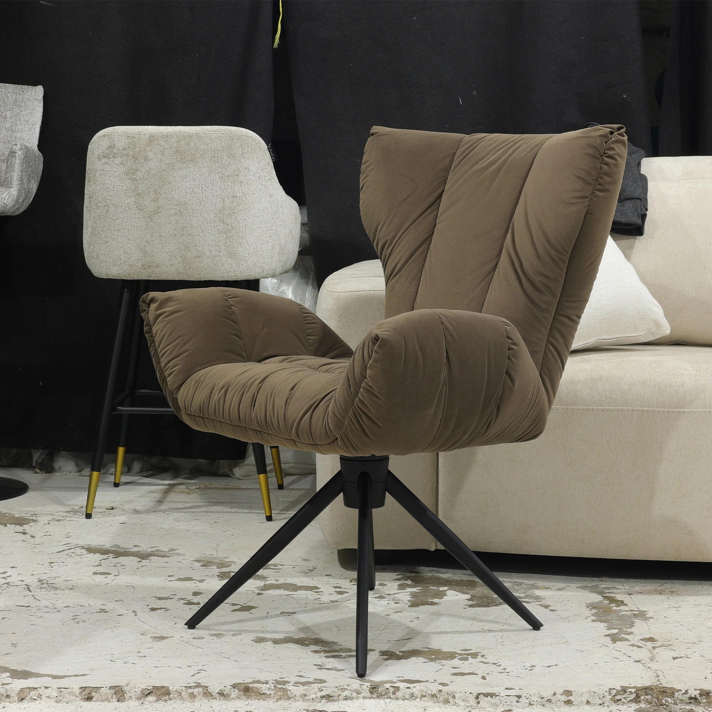

Portafolio de Proyectos
Una selección de mis mejores trabajos en diseño gráfico, desarrollo web, fotografía y audiovisual. Explora mis proyectos y descubre cómo puedo ayudarte.
SENSI HOME
Identidad visual completa para mueblería con showroom en Guadalajara. Desarrollo de logotipo, paleta de colores y guía de marca.
Logo • Identidad Visual • Packaging
Rodmans Thrift Market
Identidad visual para mercado de segunda mano con enfoque en sostenibilidad y estilo retro. Logo e imagotipo moderno.
Logo • Identidad • Diseño Gráfico
IGNIS BALAM
Identidad con inspiración en iconografía prehispánica. Paleta vibrante y tipografía única para proyecto cultural.
Logo • Color • TipografíaMalthus
Cerveza artesanal de origen jalisciense. Identidad visual enfocada en calidad y sabor auténtico con diseño premium.
Logo • Packaging • Etiquetas
NewConcept Editions
Línea de sillones premium para empresa de muebles. Identidad moderna y elegante con enfoque en lujo accesible.
Logo • Línea de Productos


Fotografía de Producto
Serie de fotografías de producto para Newconcept. Iluminación profesional y composición cuidada con CANON R6.
Fotografía • Retoque • Iluminación
Sesión Fotográfica - CasaEvo
Fotomontaje profesional para línea de muebles CasaEvo. Captura de detalles y ambientación con estética minimalista.
Fotografía Comercial • Edición • Retoque
Necrosis
Diseño completo para banda de música. Logotipo, portada de disco y material de promoción visual con estética oscura.
Logo • Diseño Editorial • Branding MusicalReels de Producto - Sensi Home
Serie de videos cortos para redes sociales. Mostración de identidad visual aplicada a mobiliario y branding.
Video • Motion • Social MediaVideo Agradecimiento - Sensi Home
Video de agradecimiento y recopilación de trabajos. Edición profesional con efectos y transiciones fluidas.
Edición • Motion Graphics • EfectosDV Creatividad y Más
Producción audiovisual completa. Narrativa visual y cinematografía para proyecto creativo integral.
Video • Cinematografía • Producción